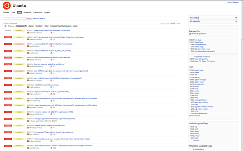

Launchpad
Hinweis:
Dieser Artikel beschreibt die allgemeine Nutzung und Funktionen von Launchpad. Möchte man einen in X|K|L|Ubuntu gefundenen Fehler melden, so findet man hierzu eine Anleitung im Artikel Fehler melden.
Launchpad ist eine Webanwendung und Seite der Firma Canonical  . Ursprünglich für Ubuntu entwickelt, dient es heute vielen weiteren Projekten als Bugtracker. Das Ziel von Launchpad war es, ein System zu schaffen, welches Querverweise zwischen den Bugs einzelner Projekte erlaubt, um Probleme, die ihre Ursache in verschiedenen Projekten zugleich haben, besser lösen zu können. Außer dem bekannten Bugtracker bietet Launchpad noch zahlreiche andere Features wie einen Online Entwicklungsplan für die eigene Software, die Übersetzungsanwendung Rosetta , die es erlaubt, die Sprachpakete der eigenen Software anderen zum Übersetzen leicht zugänglich zu machen und Supportforen für eigene Projekte.
. Ursprünglich für Ubuntu entwickelt, dient es heute vielen weiteren Projekten als Bugtracker. Das Ziel von Launchpad war es, ein System zu schaffen, welches Querverweise zwischen den Bugs einzelner Projekte erlaubt, um Probleme, die ihre Ursache in verschiedenen Projekten zugleich haben, besser lösen zu können. Außer dem bekannten Bugtracker bietet Launchpad noch zahlreiche andere Features wie einen Online Entwicklungsplan für die eigene Software, die Übersetzungsanwendung Rosetta , die es erlaubt, die Sprachpakete der eigenen Software anderen zum Übersetzen leicht zugänglich zu machen und Supportforen für eigene Projekte.
In der Open Source-Gemeinschaft wurde Launchpad zuerst scharf kritisiert, weil der Quelltext nicht verfügbar war. Daraufhin wurde Launchpad am 21. Juli 2009 unter der GNU Affero GPL, Version 3 (AGPL) lizenziert.
|  |
| Launchpad |
Register¶
Der Register Service erlaubt es einem, ein eigenes Projekt auf Launchpad zu erstellen. Dazu muss man sich zuerst mit seinem Ubuntu One Konto anmelden, dann kann man auf "Actions -> Register Project" gehen und die dortigen Angaben ausfüllen.
Code¶
Mit dem Code Service (basierend auf Bazaar) kann man den eigenen Quellcode des Programms auf Launchpad hochladen und anderen bereitstellen. Man kann automatisch das CVS/Subversion-Repository dort spiegeln und außerdem erlaubt es einem, eigene Versionen und Veränderungen ("Branches") eines anderen Launchpad-Projektes dort zu hosten.
Bugs¶
Unter dem Bugs-Menü verbirgt sich eines der bekanntesten Features von Launchpad: der Bugtracker. Hier kann man sowohl Tausende von Projekten nach Bugs und eventuell einer Lösung durchsuchen, wie auch selbst einen Bug-Report für eine Anwendung erstellen oder gar eine Lösung oder einen Patch für einen Bug einreichen.
Wie erstellt man einen Bug-Report¶
Hinweis:
Launchpad und der Bug-Support sind in Englisch gehalten. Ein Bug sollte deswegen ebenfalls immer in Englisch gepostet werden.
Launchpad ist des Weiteren keine Plattform für Wünsche und Vorschläge bezüglich der zukünftigen Entwicklung von Ubuntu.
Zuerst sollte man sichergehen, dass der Fehler nicht an einem selbst bzw. der falschen Bedienung des Programms liegt. Bugs sind per Definition Programmierfehler und nur wenn man meint, ein solcher ist Ursache des Problems, sollte man dafür einen Bug-Report posten. Deswegen ist es vor allem für Neulinge ratsam, erst einmal im ubuntuusers-Forum  nach einer Lösung für das Problem zu fragen. Ist man danach immer noch der Meinung, es handelt sich um einen Fehler des Programms, sollte man ihn melden, damit er behoben werden kann. Eine genaue Anleitung enthält der Artikel Fehler melden.
nach einer Lösung für das Problem zu fragen. Ist man danach immer noch der Meinung, es handelt sich um einen Fehler des Programms, sollte man ihn melden, damit er behoben werden kann. Eine genaue Anleitung enthält der Artikel Fehler melden.
Da ab Ubuntu 12.04 das Programm Apport zum automatischen Übermitteln von Fehlerberichten in der Voreinstellung aktiv ist, sollte man auch dort nachschauen.
Fehlerbehebung/Bug-Fixing beschleunigen¶
Um die Fehlerbehebung zu beschleunigen, ist es sehr hilfreich herauszubekommen ob ein Ubuntu- oder allgemein ein Debian-Problem vorliegt. Voraussetzung dafür ist ein relativ leistungsfähiger Computer. In einer Virtuellen Maschine wird ein aktuelles Debian-Image bzw. VMWare Debian Virtual Aplliance Image gestartet. Virtuelle Maschinen lassen sich durch VirtualBox oder QEMU erstellen.
Danach sollte das Betriebssystem zuerst auf den aktuellen Stand gebracht werden. Um die Performance zu verbessern, kann bei einem lokal installierten VMware Server die Verschlüsselung ausgestellt werden. Für die VirtualBox gibt es zwar keine offiziell vorgefertigten Images, allerdings erzeugt VirtualBox gegenüber dem VMware Server auf dem Host-System eine niedrigere CPU-Last und kann damit dem Gastsystem mehr CPU-Ressourcen zur Verfügung stellen.
Jetzt wird das gleiche Softwareproblem in dieser virtuellen Debian-Installation getestet. Sollte das Problem auch unter Debian auftreten, wäre es von Vorteil, den Bug im Debian Bug Tracking System zu melden und die entsprechende Debian Bug Tracking Nummer im Launchpad Bug Tracking System hinzuzufügen. Unter den Launchpad "Actions -> Subscibe Bug" besteht die Möglichkeit eine Benachrichtigung bezüglich dieses Bug-Reports per E-Mail auch ohne die Eröffnung eines Bug-Reports einzurichten.
Die emulierte Hardware in einer virtuellen Maschine ist nicht identisch mit der Hardware des Host-Systems. Sollte also der Softwarefehler auch innerhalb einer virtuellen Maschine (Gastsystem) vorkommen, wird der Fehler nicht durch eine Hardwarekomponente des Hostsystems hervorgerufen. Damit lässt sich zusätzlich die Hardware als Fehlerquelle ausschließen.
Blueprints¶
Blueprints, zu deutsch Blaupausen, ist ein Feature von Launchpad, in dem man Projekte nach ihren zukünftigen Plänen und ihrem Entwicklungsstand durchsuchen kann. Programmierer und Projektverwalter können hier veröffentlichen, was sie noch vor haben an ihrem Programm zu verändern und zu erweitern. Und als User kann man eine Programmidee hier von ihrem Entwurf über ihre Entwicklung bis schließlich zu ihrer Implementierung beobachten. Ubuntu-Blueprint zeigt zum Beispiel an, was alles für die bestehenden und kommenden Ubuntuversionen geplant ist.
Translations¶
Hinter Translations, zu deutsch Übersetzungen, verbirgt sich ein Launchpad-Feature, welches es Entwicklern erlaubt, ihre Software durch die Community in eine Vielzahl von Sprachen übersetzen zu lassen und schließlich einem größeren Publikum zugänglich zu machen. Der aktuelle Fortschritt einer Übersetzung wird dabei grafisch dargestellt. Will man ein Projekt unterstützen, auch wenn man nicht programmieren kann, ist es eine gute Idee hier nachzuschauen, ob man vielleicht nicht durch eine Übersetzung etwas zu einem Projekt beitragen kann.
Answers¶
Answers stellt einem Projekt ein äußerlich minimalistisches Supportforum zur Verfügung, in dem sich Entwickler und Nutzer eines Projektes oder Programms untereinander austauschen können.
PPA¶
Ein PPA ist ein Service von Launchpad und steht für "Personal Package Archive" zu deutsch: eigenes Paketarchiv. Es bietet die Möglichkeit, Debian-Pakete für unterschiedliche Architekturen (i386, amd64 und lpia) zu bauen und diese dann entweder als Direktlinks oder durch eine eigene Paketquelle anderen zur Verfügung zu stellen.
Launchpads zukünftige Entwicklung¶
Will man sich über die zukünftige Entwicklung von Launchpad informieren, kann man einmal das oben genannte Blueprints-Feature benutzen oder zum anderen auf der Webseite von Mark_Shuttleworth nach Neuigkeiten schauen.
Links¶
Intern¶
Fehler melden – Allgemeiner Artikel zum Melden von Fehlern in Programmen
Ubuntu Touch - Fehler melden
Extern¶
Launchpad News
– Launchpad-Blog bzw. Informationen über die aktuellsten Launchpad-Entwicklungen
- Erstellt mit Inyoka
-
 2004 – 2017 ubuntuusers.de • Einige Rechte vorbehalten
2004 – 2017 ubuntuusers.de • Einige Rechte vorbehalten
Lizenz • Kontakt • Datenschutz • Impressum • Serverstatus -
Serverhousing gespendet von